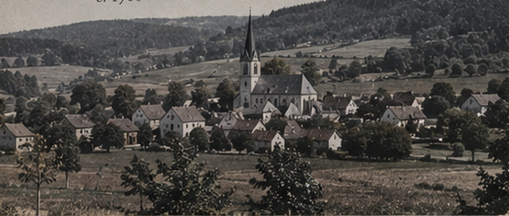

A FAMILY RECORD IN PROGRESS
People, places,
and the proof behind them.
The Lauermann · Lezer Family Archive follows German, East Prussian, Polish, Irish, and American family lines while keeping documented facts separate from probable links, research leads, and family memory.
Read the family chaptersILLUSTRATIVE PERIOD IMAGERY · NOT A FAMILY PHOTOGRAPH
THE ARCHIVE, AT A GLANCE
Built to be read like an archive, not a confidence-free tree.
Every chapter makes its evidence limits visible. The goal is not to stretch a lineage as far as possible; it is to preserve what is known and make the next decisive record easy to find.
View open researchLauermann
Charles Joseph → John → Peter → Peter II, with the 1794 baptism search at the center of the European story.
RESEARCH LEADLezer / Grabinski
Anamae’s American bridge, Fred Lezer, Anna Grabinski, and the Kurkau–Neidenburg question.
DOCUMENTED SERVICEEdward J. Lauermann
Navy service, postwar railroad work, and biological/adoptive family connections kept in separate view.
HOW FAR BACK?
Documented anchors and active leads.
| Line | Earliest documented anchor | Earliest research lead | Next decisive record |
|---|---|---|---|
| Lauermann | Peter Lauermann II, reported b. 1794 | Nicolaus / Nicolas Peter, c. 1702 | 1794 Wadern-area Catholic baptism |
| Lezer / Grabinski | Anamae Lezer, 1928–2026 | Fred Lezer, c. 1881 | European birthplace and parentage bridge |
| Spoo / Grossmann / Freywald | Anne Katherine Grossmann, 1862–1937 | Richardus / Richard Spoo, c. 1756 | Parish and locality evidence |
| Brennan / Walsh / Warren | Margaret Cecile Brennan, 1895–1976 | James Warren, 1682–? | Proof or disproof of tree-only extension |
READ THE RECORD
One archive. Many family stories.
Dedicated chapters replace the former cards and fragments. Each has a lineage sketch, historical context, named record targets, and visible open questions.